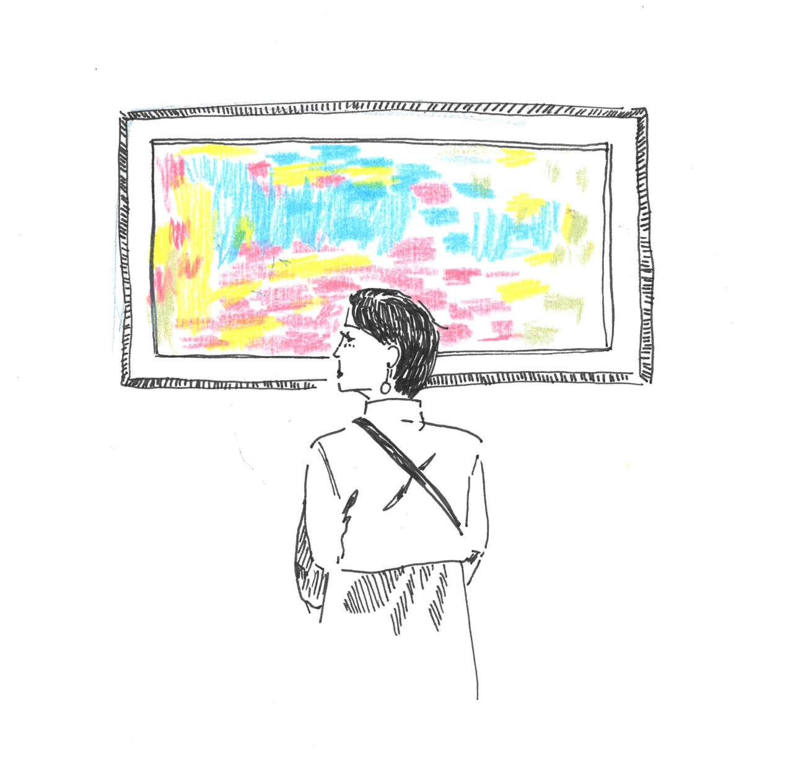

I have experienced the death of a loved one only twice in my 25 years of living—which I suppose is a fortunate thing. Each time, I am surprised that one experiences heart ache as a real physical sensation. For me, it feels like your heart is quivering from exhaustion, like a hole is being carved out of your flesh that leaves an unpleasant and lingering taste in the back of your throat. In both of these instances, death was remote; I did not see nor experience the moment of their passing. I have always been (regretfully) on the other side of the world, and grieving has often been a long and delayed process. You know that they are dead, but do not feel the direct absence of their existence from your everyday life, rather an understanding of their absence in the world and an absence in your reality. It feels very empty.
My grandmother died earlier this month. I was incredibly close with her, having spent a large portion of my childhood and late teenage years with her. She was a sassy lady, as well as incredibly funny and fashionable (two things I hold to be vitally important characteristics). She was also a survivor of the nuclear bomb that hit Nagasaki, Japan in 1946. She lived many lives, over and over, and it was my good fortune that my life overlapped with the last 25 years of hers. The story of her life would require more words and processing of thoughts than this post could possibly offer—so I leave that tale for another day.
The focus of this post is on art and memory of a deceased person, and how one artist called Pierre Bonnard used his works to process his grief. When I heard of my grandmother’s passing, I spent a sleepless night mourning her death, and then in the morning I rode the no. 73 bus for no particular reason other than that it was something to do. I found myself crossing the Millennium Bridge walking on the South Bank of the Thames River towards the Tate Modern. It was here that I first saw Bonnard’s paintings exhibited.

Viewing the exhibition
Bonnard, for better or worse, is widely known as “the painter of happiness”. He was born in France in 1867 and over the course of nearly eight decades became widely known as one of the greatest sensual painters of the 20th century. He hardly ever finished his paintings, often working on a piece over the span of several decades, returning to it after long spouts of neglect. His title as “the painter of happiness” comes from his bold use of bright and vivid colours, which has brought forth strong feeling of joy in many people that have viewed his paintings.
Bonnard was an artist that used his drawings to capture his thoughts and perspectives rather than trying to convey real life. Above accuracy, he put priority into recreating how he felt at the time. For that reason, he would alter colours by brightening them and changing them, he would alter perspective, and he would alter composition to show to his viewers what he felt foremost when he saw the view he wanted to paint. His process reflected this goal. He would first make rough sketches or take black and white photographs of his subjects/scenery, then later use these as reference points to paint them onto a canvas. Remembering as he went, the colours, and feelings he felt at the time. Bonnard never painted from life, as was popular among his contemporaries, but rather relied on his memory to bring his paintings to life.
Picasso once privately dismissed him as a relic of the Impressionists – “at the end of an old idea” – while more forgiving critics concluded that he was the archetypal “painter of happiness”. But unlike the Impressionists, who painted from nature, Bonnard painted almost exclusively from memory, arguing that “the presence of the object” was “a hindrance” to communicating the artist’s original idea.
-SAMUEL REILLY The Economist
My first impressions of Bonnard’s work were not positive. I was distracted by the weird leg position of Bonnard’s wife, Marthe, the hazy unfinished edges of his trees, the strange composition of a dog’s head in relation to its body, and the blurry cat that popped out of the frame suddenly without reason. However, the longer I looked the more I accepted these features. Perhaps Bonnard thought his dog was ugly, maybe he focused more on Marthe’s face rather than her foot, and perhaps his cat had an annoying habit of sticking its head into odd places. What was overpowering was the world he created through his colours; that seemed dreamy, distant and nostalgic. It seemed very much how I remembered my own childhood memories, where over the years the colours had become saturated by dreams. No longer accurate, but the emotions remained.
Blurry cat that appears in a few of his paintings, very close to the frame.
The exhibition at the Tate Modern was organised chronologically; with Bonnard’s earlier paintings at the start of the exhibition. As Bonnard’s career progressed, so too did the sickness of his terminally ill wife, Marthe de Méligny. She was scattered throughout the frames of the exhibition, an omnipresent and persistent figure. The earlier paintings were of shadowy figures—mostly Marthe, in a dark room. The paintings became increasingly more vibrant, beautiful, and joyous as they aged, and as Marthe grew sicker and closer to death. This was all happening during a backdrop of an increasingly destabilised Europe, with the spread of facism. This culminated at the end of Bonnard’s life with the outbreak of the Second World War in 1939, the death of Marthe in 1942, and Bonnard’s own death in 1947.
Blurry cat that appears in a few of his paintings, very close to the frame.
Nude in the Bath 1936
I began to see his paintings, which chronicled his wife and her decline, as an homage to her life and death, and to the memory of a lived life after death. I was deeply touched by the painting of Marthe in a bath (1936), that he had drawn before she passed away. Close to this painting was one of his quotes,
"One does not always sing from happiness."
-Pierre Bonnard 1942
Why was it that Bonnard could paint such beautiful colours? Was it to escape an increasingly perilous reality, both personally and socially? Or was it perhaps for Marthe that he painted so enchantingly. Does loss make us sense the world more acutely, is it perhaps because we are reminded of our impermanence? Or is it because we make vivid the memory of a time before our loss, which will feel always more than what we have in the present, because it is no longer attainable.
Bonnard and my grandmother’s death have become inseparable in my mind. And so, I wanted to try painting my memory of her through the same process as Bonnard to see whether it would prove in any way therapeutic for me, and help process her death.
1. Remembering from a black and white photograph
First, I found a black and white photograph of my grandmother that I had taken. I wrote what I could remember of the moment. I chose a photograph of my mother and my grandmother walking towards me as we were heading to a seaside restaurant for lunch. It was taken during my early university years as my grandmother could still walk. I loved how carefree they look through their posture, but also recognise that I was probably the most carefree I have been in my life during those years too. I remembered the colours of the sky, the cement road and the mountain trees as crisp and clear. Life to me seemed easy and problem-free, and whilst my grandmother was already very frail at this point, all I can see from this photo was my memory of a very youthful and strong woman. Perhaps more of a reflection of my own state of mind than the reality.
2. Sketching out what I focused on
Then I drew a rough sketch, bearing in mind what I wanted to emphasise, and what I could not remember much of. I could not remember what colour clothes they wore, or what building was in the background. To me, these facts were secondary to more important things, such as the fact that they were smiling, and that the sky was blue. However, when I tried to draw their smiles this proved much harder to recall than I had anticipated. What kind of smile was it, was it a full toothy smile or a subtle small smile? As it turns out, all I could really recall of that moment was that it was a happy one.
3. Remembering the right shade of blue
Thirdly, I painted using oil paints. I laboured for some time on painting the colours of the sky, for I found it incredibly hard to pin point the exact shade of blue. It was only when I gave up on trying to replicate what real shade of blue the sky might’ve been, and focused instead on trying to find the shade of blue that best reflected my emotions as I recalled the memory did I feel satisfied with the shade of blue. However, I noticed when I returned to my painting the next day and the following week, the shade of blue no longer felt accurate.
The exercise was therapeutic for me because I had been able to take the feelings that had been carved into my flesh, and translate them onto a canvas. Once they were on paper I felt I no longer needed to harbour those painful etchings. While painting, I enjoyed the feeling of not being limited by what might’ve been realwhen creating the colours, and embraced the freedom of conveying how the momentfelt. However, on the other side of the same coin this meant that the act of painting did not allow me to paint my grandmother, but rather paint my emotions attached to my grandmother. Painting was more a reflection of my own state of mind at the point of painting rather than of who my grandmother was as a person. In a strangely convoluted way, my painting of my grandmother hit home a message that my grandmother no longer existed in this reality. She had instead moved into a realm of dreams, memories, and emotions—away from a world where the sky was a fixed shade of blue.
I wondered whether the secret to how Bonnard painted such beautiful colours lay in never quite finishing his paintings. He visited the same moment over and over again but on different days when he felt different emotions, and would add the colours he felt he remembered on that day. That might explain his multicoloured renditions of his wife bathing. In one sense, the thought of perpetually grieving the death of someone seems awfully sad (if not also completely relatable, do we ever stop missing someone?). But if the things we create from of our grief are as beautiful as Bonnard’s dreamy paintings, perhaps it is the most thoughtful method of honouring a life gone by. Perhaps this is what people mean when they say the deceased live on in our memories.